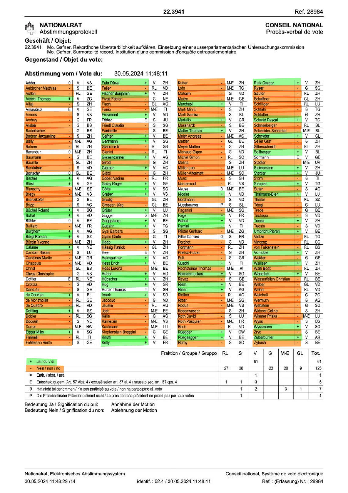
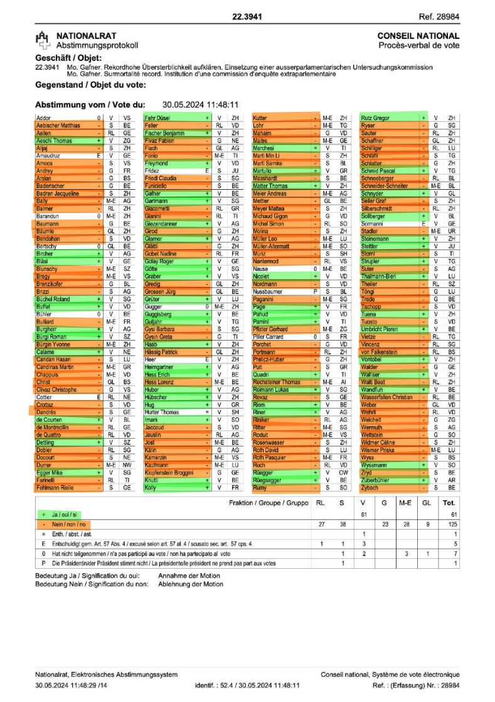
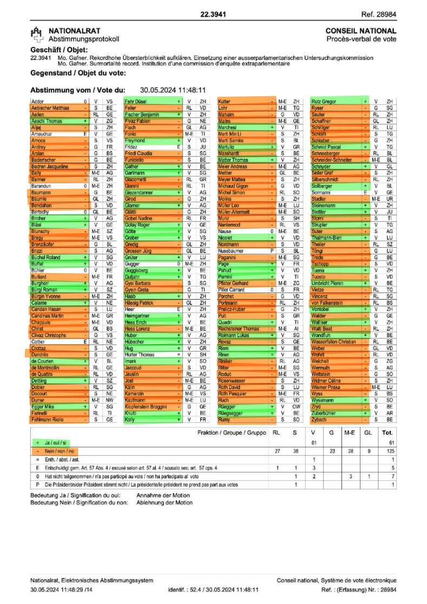

22.3941 Mo. Gafner
Rekordhohe Übersterblichkeit aufklären. Einsetzung einer ausserparlamentarischen Untersuchungskommission.Parlamentarier gegen eine Untersuchungskommission zur Übersterblichkeit im 2022 und möglicher Verbindung zur Covid-19 Impfung
(6'300 Personen starben 2022 mehr als erwartet).
Im folgenden Abstimmungsprotokoll sieht man mit grün wer der Motion Gafner zustimmte, und wer eine Untersuchung verhinderte.

Wir haben nun allen Nationalrätinnen und Nationalräten am 04.06.2024 geschrieben die eine Untersuchung verhinderten.
Auch dem Initiator der Motion Andreas Gafner haben wir geschrieben. Dazu verwendeten wir diese Seite.
Hier das Mail an Andreas Gafner mit dem Inhalt an die Nationalrätinnen und Nationalräte, die die Untersuchung verhinderten:
 
